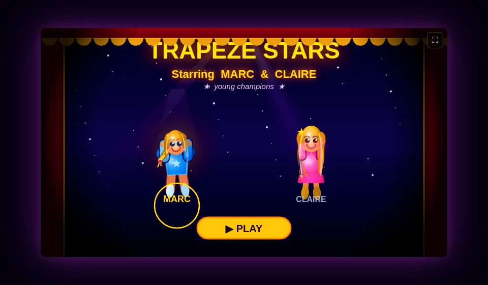

Choose your game
All five games are playable. Each card highlights a different way to take the stage.
Demo model pairings only: every game used multiple AI tools. These are not sole-author credits or endorsements; the emblems are original, not official provider logos. Ultra is a Codex mode, not a separate model.
ClassicSIDE-SCROLLING PLATFORMER
The original game: run, jump, bounce on trampolines and land on obstacles.
- 12 levels across four worlds
- Variable-height jumps and trampoline bounces
- Trapezes, hoops and a flying catcher
deepseek-flash
DeluxePERSPECTIVE REIMAGINED
A new perspective behind the artist. Build momentum, perform aerial tricks and aim for the catcher’s hands.
- Build swing momentum for giant loops
- Bank trick points by landing safely
- A safety net keeps the run going after a fall
grok-4.6
CityA ROOFTOP CROSSING
Swing across a neon city with a free-moving camera: seven rigs, three acts and one continuous rooftop performance.
- Seven connected rigs across a generated city
- Crowd hype, a TV drone and rooftop radar
- A catcher and safety net keep the crossing alive
gpt-5.6-sol

Circus AlzahirINSTALLABLE 2D ADVENTURE
A cinematic evolution of the original 2D game that can be added to your home screen.
- Cinematic opening and world introductions
- World music, medals and layered scenery
- Installable PWA with offline play
claude-opus-5

Trapeze Stars 3DTHE ACT IN FULL 3D
A full 3D experience with timing-based catches and a camera that follows the artist.
- 3D artists and arena rendered with WebGL
- Four worlds, tricks and combos
- Local leaderboard, photo finish and gamepad support
gpt-6-astra
Compare Classic, Deluxe and City
These are different games, not just graphics upgrades. City brings Deluxe's swing, catch and safety-net mechanics to a rooftop crossing.
| Classic | Deluxe | City | |
|---|---|---|---|
| View | Side-scrolling 2D | Perspective through the tent | Free camera over a 3D city |
| Setting | 2D big top | Circus worlds in perspective | Generated neon rooftops |
| Journey | 12 levels, four worlds | 12 replayable levels | Seven connected rigs in three acts |
| Catch | Assisted near the bar | Player-controlled with graded timing | Player-controlled at every rig |
| Swing | Automatic pendulum | Pump to build momentum | Pump to build momentum |
| Tricks | Simple somersault | Bank points by landing safely | Chain tricks and clean exits |
| Safety | Lose a life on a fall | Net catches falls | Net returns you to the last roof |
| Screen | Fixed 800×450 aspect ratio | Responsive portrait and landscape | Responsive with adjustable effects |
| Controls | Keyboard and touch | Keyboard and touch | Keyboard, touch and free-look camera |
Made to play anywhere
All five games are hosted online as a static site. Open this address on a phone or another computer; no local server or account is needed.
Controls
Classic, keyboard — ← → move, Space jump or release, F grab, P pause.
Deluxe, keyboard — ← → move, Space jump, grab or release, Shift pump or trick, P pause.
City, keyboard — Space pump or grab, S release, F trick, drag to look, P pause.
Circus Alzahir, keyboard — ← → move, Space jump or release, F grab or flip, Esc pause.
Stars 3D, keyboard — hold Space to pump, release when the cue glows, press again in flight to flip; Esc pauses.
Touch — on-screen controls replace keyboard keys. Each game's start and pause screens explain its controls.